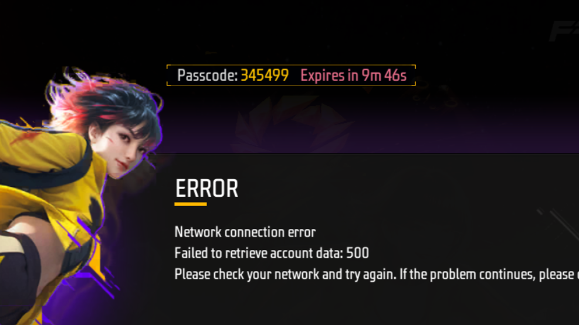

Session Provisioner
Session Provisioner
Complete the sequential steps below to generate, parse, and sign your Garena Free Fire session identifiers.
1
Generate Session Token
Exchange your retrieved debug OTP for raw Garena network session payloads.
openid payload
--
session access token
--
2
Convert Session to Secure JWT
Sign your standard Access Token into a cryptographically valid security JWT payload.
openid signature
--
secure signature jwt
--
 How to get the OTP?
How to get the OTP?
Follow the instructions below to enable local client debug configs and capture the game session token identifier.
1
Download Configuration:
Download localconfig.json
Download localconfig.json
2
Move File to Android Storage:
Open your file explorer application and copy the downloaded file into your target path:
Open your file explorer application and copy the downloaded file into your target path:
Android\data\com.dts.freefireth\files
or
Android\data\com.dts.freefiremax\files
3
Launch Free Fire:
Open Garena Free Fire on your emulator or mobile device normally.
Open Garena Free Fire on your emulator or mobile device normally.
4
Record OTP:
On the main loading/login portal screen, inspect the newly generated numerical debug code shown directly in-game:
On the main loading/login portal screen, inspect the newly generated numerical debug code shown directly in-game:
